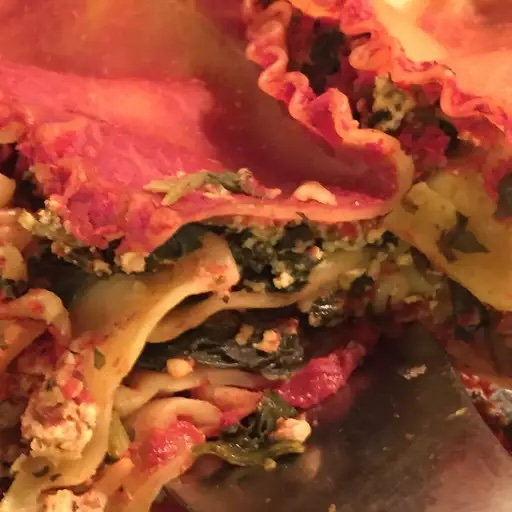

Vegan Lasagna 2

Vegan version of an old favorite, easy to modify for manicotti, stuffed shells or with more, less or different veggies. If you'd like some vegan cheese, top the lasagna with soy cheese before baking. Soft tofu yields wetter lasagna; use firm tofu for drier lasagna.
Ingredients
- 3 cloves garlic, minced
- 1/2 pound mushrooms
- 1 tablespoon vegetable oil
- 1 (10.75 ounce) can tomato puree
- 1 (10 ounce) package frozen spinach, thawed and drained
- 2 teaspoons garlic salt
- 2 tablesppons italian-style seasoning
- 1 (12 ounce) package soft tofu
- 2/3 (16 ounce) packages instant lasagna noodles
Steps
- Preheat oven to 375 degrees F (190 degrees C).
- In a large skillet, saute garlic and mushrooms in oil until all the liquid is cooked out. Add 1/3 tomato puree to mushrooms and garlic, cook 2 to 3 minutes, and remove from heat.
- In a microwave-safe bowl, combine spinach, garlic salt, Italian seasoning and tofu. Blend until the mixture is an even consistency. Heat in a microwave on high for 2 minutes.
- In a 9x9 inch baking pan, pour one thin layer of remaining tomato puree, a layer of noodles, 1/2 the tofu mixture, the mushroom sauce, a layer of noodles, 1/2 the tofu mixture, a layer of tomato puree, a layer of noodles, and a final layer of tomato puree.
- Bake 45 minutes in the preheated oven.
- Enjoy!